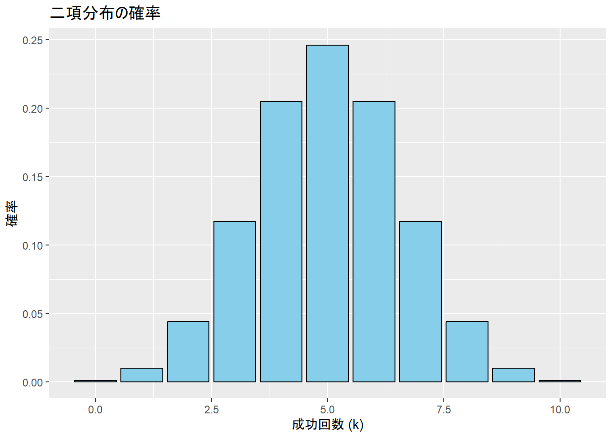
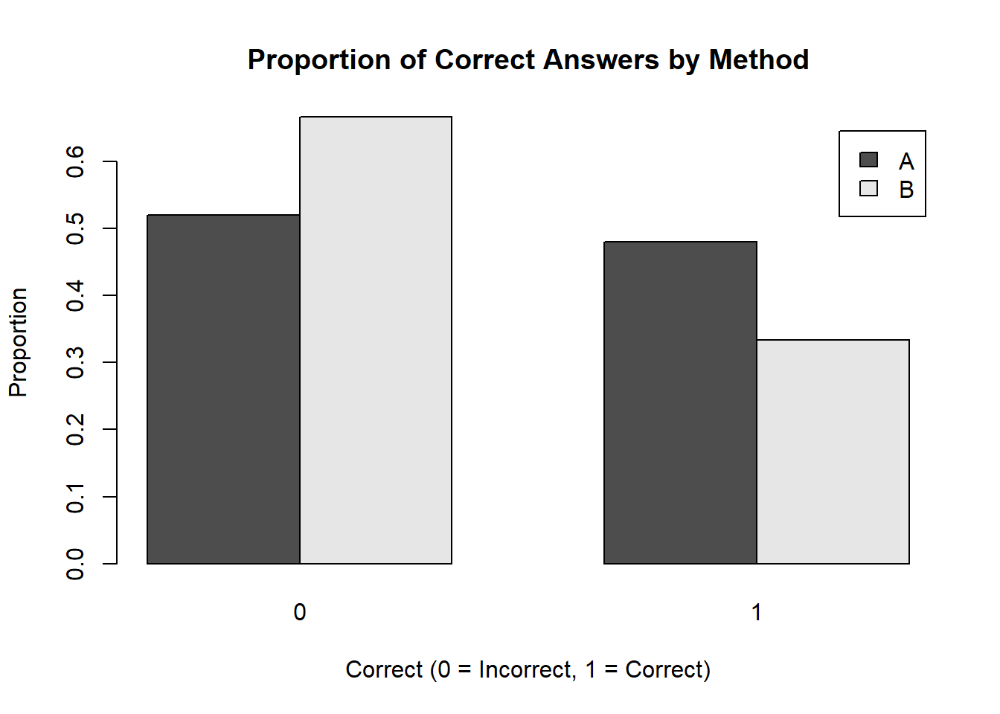
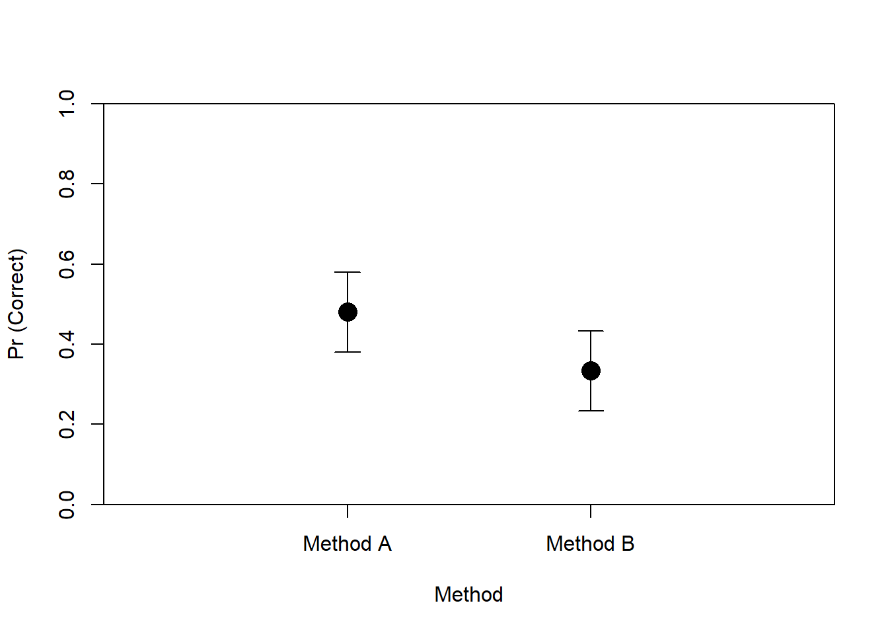

Chapter 4 リンク関数付き分布の説明
| 分布 | リンク関数 | 説明 |
|---|---|---|
binomial(link = "logit") |
ロジット | 二項データ（成功/失敗）を扱う。ロジスティック回帰。 |
gaussian(link = "identity") |
恒等 | 通常の線形回帰。連続データを予測。 |
Gamma(link = "inverse") |
逆 | ガンマ分布を使用し、非負の連続データを扱う（時間・コストなど）。 |
inverse.gaussian(link = "1/mu^2") |
逆二乗 | 逆ガウス分布を使用し、非負の連続データ（右裾の長いデータ）を扱う。 |
poisson(link = "log") |
対数 | カウントデータ（事故数・来店数など）に適用。ポアソン回帰。 |
quasi(link = "identity", variance = "constant") |
恒等 | 分布を仮定せず、準尤度推定を用いるモデル。 |
quasibinomial(link = "logit") |
ロジット | 二項データで過分散がある場合に使用。 |
quasipoisson(link = "log") |
対数 | カウントデータで過分散がある場合に使用。 |
4.1 数式表現
ロジスティック回帰（binomial(link = "logit")）のリンク関数:
\[ \log \left(\frac{p}{1 - p}\right) = X\beta \]
ポアソン回帰（poisson(link = "log")）のリンク関数:
\[ \log (\mu) = X\beta \]
ガンマ回帰（Gamma(link = "inverse")）のリンク関数:
\[ \frac{1}{\mu} = X\beta \]
逆ガウス回帰（inverse.gaussian(link = "1/mu^2")）のリンク関数:
\[ \frac{1}{\mu^2} = X\beta \]
4.2 二項分布
- ある試行を n 回行った際の成功回数 k が発生する確率 q
\[ p(k \mid N, q) = \binom{N}{k} q^k (1 - q)^{N - k} \]
\[ \binom{N}{k} = \frac{N!}{k!(N-k)!} \]
4.3 ロジット関数
\[ \text{logit}(p) = \log \left( \frac{p}{1 - p} \right) \]
- リンク関数：従属変数と、説明変数の集まり（線形予測子：線形結合した説明変数）
4.4 ロジスティック関数
\[ \text{logistic}(x) = \frac{1}{1 + e^{-x}} \]
## Warning: Using `size` aesthetic for lines was deprecated in ggplot2 3.4.0.
## ℹ Please use `linewidth` instead.
## This warning is displayed once every 8 hours.
## Call `lifecycle::last_lifecycle_warnings()` to see where this warning was
## generated.
ロジット関数の逆関数のこと
逆関数：戻してあげる関数のこと
- e.g., log(3) -> exp(log(3)) = 3
リンク関数としてロジット関数を使っているため、ロジット関数の逆関数であるロジスティック関数で戻してあげている。
ロジスティック関数は0から1の範囲を取る。よって、確率の変化を表現するのに便利
0から1の範囲しかとらない
4.6 ハンズオンセッション
4.6.1 疑似データの用意
Correct： 語彙テストの得点。1なら正解、0なら不正解
Method：指導法A、指導法B
Years_of_study：英語学習歴
set.seed(123) # 再現性のため
dat <- data.frame(
Correct = sample(0:1, 40, replace = TRUE), # 1 または 0
Method = sample(c("A", "B"), 40, replace = TRUE), # A または B
Years_of_Study = sample(0:10, 40, replace = TRUE) # 0 ~ 10 の数値
)## Correct Method Years_of_Study
## 1 0 A 5
## 2 0 B 10
## 3 0 B 7
## 4 1 A 5
## 5 0 A 5
## 6 1 A 6## Correct Method Years_of_Study
## Min. :0.000 Length:40 Min. : 0.000
## 1st Qu.:0.000 Class :character 1st Qu.: 2.000
## Median :0.000 Mode :character Median : 5.000
## Mean :0.425 Mean : 4.875
## 3rd Qu.:1.000 3rd Qu.: 7.000
## Max. :1.000 Max. :10.000##
## A B
## 25 154.6.2 作図
# Methodごとの正答率を計算
table_data <- table(dat$Method, dat$Correct)
# 棒グラフで可視化
barplot(prop.table(table_data, margin = 1), beside = TRUE,
legend = rownames(table_data), xlab = "Correct (0 = Incorrect, 1 = Correct)",
ylab = "Proportion", main = "Proportion of Correct Answers by Method")
4.6.3 モデルの推定
glm()関数を使用するfamilyで確率分布を指定する
##
## Call:
## glm(formula = Correct ~ Years_of_Study, family = binomial(),
## data = dat)
##
## Coefficients:
## Estimate Std. Error z value Pr(>|z|)
## (Intercept) 0.6788 0.6650 1.021 0.3073
## Years_of_Study -0.2061 0.1238 -1.665 0.0959 .
## ---
## Signif. codes: 0 '***' 0.001 '**' 0.01 '*' 0.05 '.' 0.1 ' ' 1
##
## (Dispersion parameter for binomial family taken to be 1)
##
## Null deviance: 54.548 on 39 degrees of freedom
## Residual deviance: 51.559 on 38 degrees of freedom
## AIC: 55.559
##
## Number of Fisher Scoring iterations: 4- 95%信頼区間の算出
## Waiting for profiling to be done...## 2.5 % 97.5 %
## (Intercept) -0.6010333 2.05617252
## Years_of_Study -0.4667027 0.026819364.6.4 作図
# 年齢（Years_of_Study）の範囲を設定
years_range <- seq(0, 10, length.out = 100)
# 各年数に対する予測確率を計算
pred_probs <- predict(res, newdata = data.frame(Years_of_Study = years_range), type = "response")
# 予測確率を描画
plot(
years_range, pred_probs,
type = "l", # 線で描画
col = "blue",
lwd = 2,
xlab = "Years of Study",
ylab = "Pr (Correct)",
main = "Logistic Regression: Probability of Correct Answer",
ylim = c(0, 1),
xaxt = "n", yaxs = "i"
)
# x軸のカスタムラベルを追加
axis(1, at = seq(0, 10, by = 1), labels = seq(0, 10, by = 1))
4.7 オッズ比の算出
- オッズ：「失敗するよりも何倍成功しやすいか」を表す指標
\[ \textオッズ = \frac{p}{(1-p)} \]
オッズ比：オッズの変化量。ロジスティック回帰モデルの回帰係数に指数関数を適用すると算出できる。
- 英語学習年数が1年増えると、テスト得点が0.81倍上がる
## (Intercept) Years_of_Study
## 1.9715609 0.8137445## Waiting for profiling to be done...## 2.5 % 97.5 %
## (Intercept) 0.5482448 7.815997
## Years_of_Study 0.6270665 1.0271824.9 質的変数の場合
4.9.1 トリートメントコントラスト
## B
## A 0
## B 1- Method Bの係数：Method B - Method A
##
## Call:
## glm(formula = Correct ~ Method, family = binomial, data = dat)
##
## Coefficients:
## Estimate Std. Error z value Pr(>|z|)
## (Intercept) -0.08004 0.40032 -0.200 0.842
## MethodB -0.61310 0.67842 -0.904 0.366
##
## (Dispersion parameter for binomial family taken to be 1)
##
## Null deviance: 54.548 on 39 degrees of freedom
## Residual deviance: 53.713 on 38 degrees of freedom
## AIC: 57.713
##
## Number of Fisher Scoring iterations: 4- 95%信頼区間の算出
## Waiting for profiling to be done...## 2.5 % 97.5 %
## (Intercept) -0.8789758 0.710550
## MethodB -2.0030397 0.6925114.9.2 作図
## Warning: パッケージ 'arm' はバージョン 4.3.3 の R の下で造られました## 要求されたパッケージ MASS をロード中です##
## 次のパッケージを付け加えます: 'MASS'## 以下のオブジェクトは 'package:dplyr' からマスクされています:
##
## select## 要求されたパッケージ Matrix をロード中です## Warning: パッケージ 'Matrix' はバージョン 4.3.3 の R の下で造られました##
## 次のパッケージを付け加えます: 'Matrix'## 以下のオブジェクトは 'package:tidyr' からマスクされています:
##
## expand, pack, unpack## 要求されたパッケージ lme4 をロード中です##
## 次のパッケージを付け加えます: 'lme4'## 以下のオブジェクトは 'package:brms' からマスクされています:
##
## ngrps##
## arm (Version 1.14-4, built: 2024-4-1)## Working directory is C:/Users/terai-masato/Documents/stat_class_2025##
## 次のパッケージを付け加えます: 'arm'## 以下のオブジェクトは 'package:rstan' からマスクされています:
##
## traceplot# glmモデルの結果を使って予測確率を計算
pred_probs_A <- predict(res.2, newdata = data.frame(Method = "A"), type = "response")
pred_probs_B <- predict(res.2, newdata = data.frame(Method = "B"), type = "response")
# Method A と Method B の予測確率を描画
plot(
c(1, 2), c(pred_probs_A, pred_probs_B),
pch = 16, col = "black", cex = 2,
xlim = c(0, 3), ylim = c(0, 1),
xaxt = "n", xlab = "Method", ylab = "Pr (Correct)",
xaxs = "i", yaxs = "i"
)
# 信頼区間のエラーバーを追加
arrows(1, pred_probs_A - 0.1, 1, pred_probs_A + 0.1, angle = 90, code = 3, length = 0.1, col = "black")
arrows(2, pred_probs_B - 0.1, 2, pred_probs_B + 0.1, angle = 90, code = 3, length = 0.1, col = "black")
# x軸のカスタムラベルを追加 (Method A と Method B)
axis(1, at = c(1, 2), labels = c("Method A", "Method B"))
4.10 次週までの課題
4.11 参考文献
草薙（2017） 確率分布から見る外国語教育研究データ
馬場 RとStanではじめるベイズ統計モデリングによるデータ分析
https://debruine.github.io/faux/articles/contrasts.html#x3-design
Rを用いた一般化線形混合モデル（GLMM）の分析手法を身につける:言語研究分野の事例をもとに